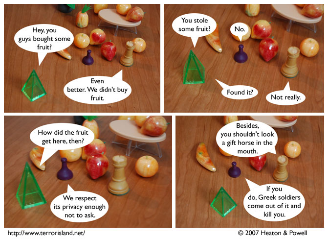

Strip #96
— Monday, January 22, 2007
Hence the saying, carpe equus
Notes, Thoughts, &c.
Ben’s Notes
I’ve never actually received a gift horse, but according to my research, today’s strip is an accurate depiction.
Lewis’s Notes
Children of Men and Pan’s Labyrinth are good movies I saw recently. Since I just got back from Children of Men, I am too tired to write witty comments. Just assume I made a clever joke that you enjoyed, or perhaps a wry observation.